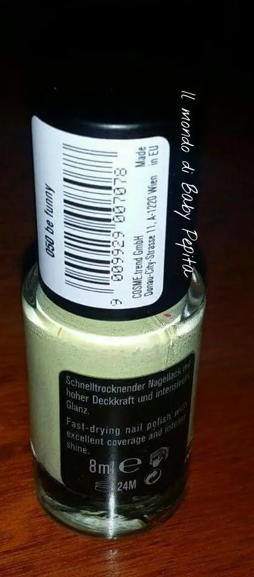
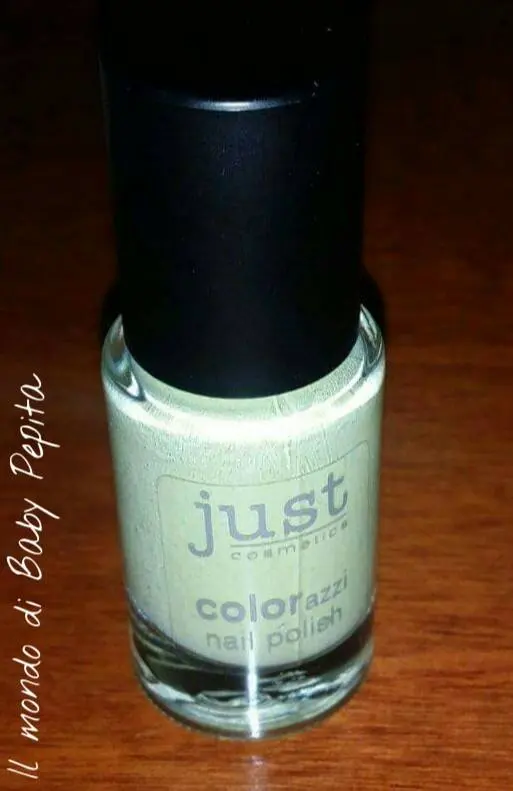
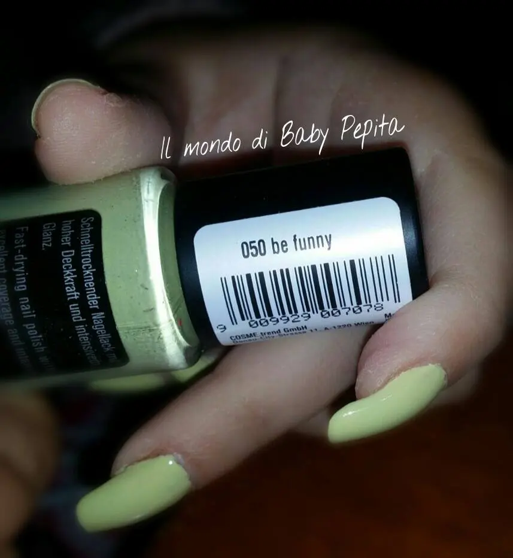
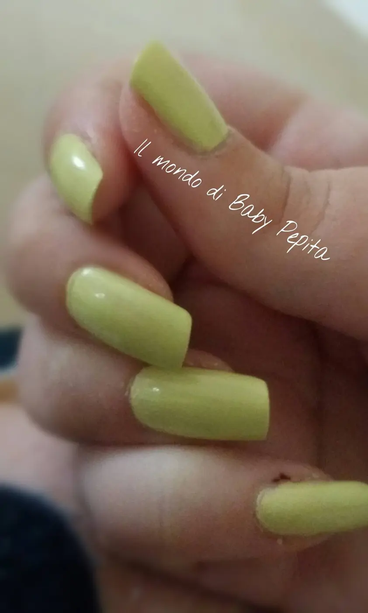
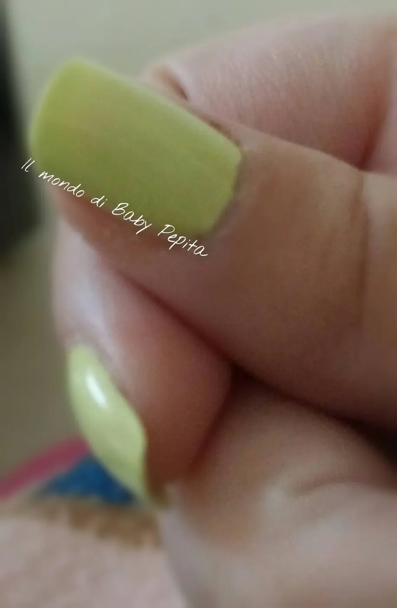
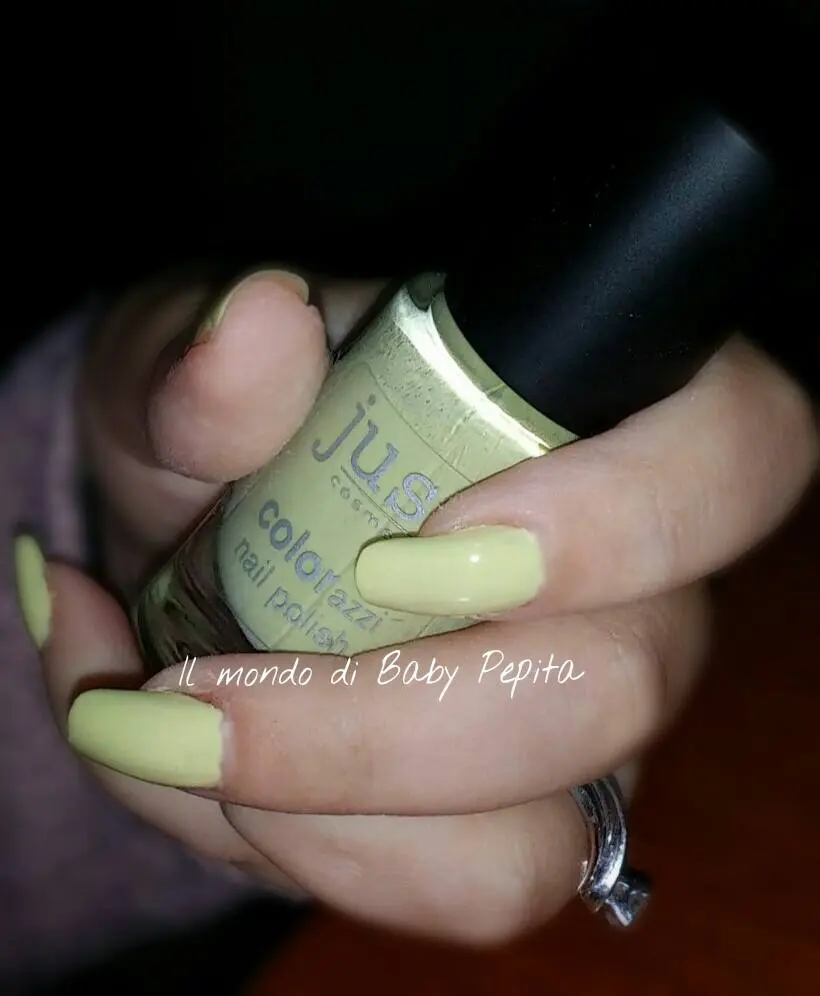

Just Cosmetics - Smalto n°050 be funny

Salve amiche oggi riparliamo di un'azienda tedesca, che io ho avuto già in passato il piacere di collaborare e che mi sono trovata benissimo.
La Just Cosmetics.

Lo smalto che vedete qui un giallo banana, un verde acido, non so come definirlo. .ma molto molto carino..colore adattissimo per l'estate ma a me piace colorare queste giornate invernali e allora uso anche colori decisamente pastello. .

Si presenta in questa boccettina trasparente con il tappo nero matt. .
il nome e il numero dello smalto lo troviamo proprio sul tappo.

Come già parlato nell'altra recensione, questi smalti si asciugano rapidamente ed hanno un ottima consistenza, durano parecchio. .

Mi è piaciuto tenerlo da solo senza nail art e ne altro perchè mi piace il colore così com'è. .

Senza utilizzare top coat già è lucido di suo. .
Questo brand non mi delude mai ihih

INCI: 050: INGREDIENTS: BUTYL ACETATE, ETHYL ACETATE, NITROCELLULOSE, ADIPICACID/NEOPENTYL GLYCOL/TRIMELLITIC ANHYDRIDE COPOLYMER, ISOPROPYLALCOHOL, ACETYL TRIBUTYL CITRATE, CI 77891, ACRYLATES COPOLYMER,STEARALKONIUM BENTONITE, STYRENE/ACRYLATES COPOLYMER, N-BUTYLALCOHOL, SILICA, DIACETONE ALCOHOL, ETOCRYLENE, CI 15850, CI 19140
Spero che sia stata un pò utile e di buona compagnia. .buona serata